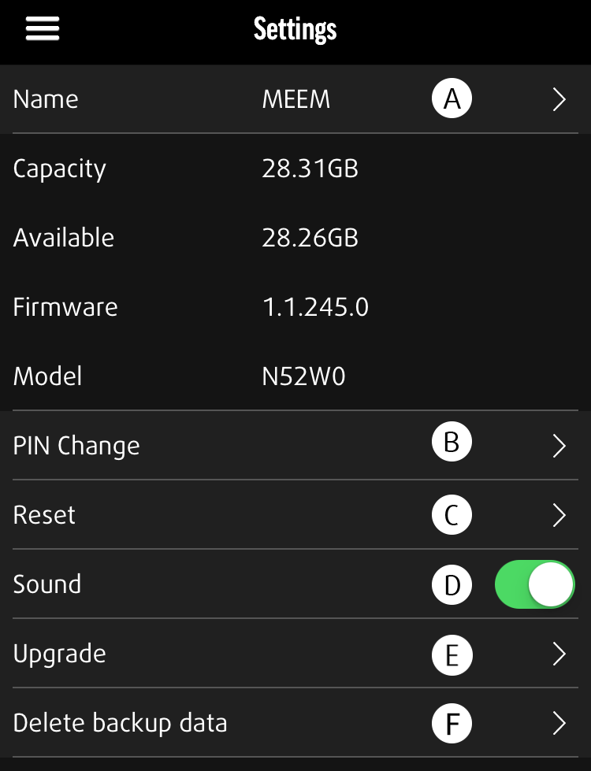

PARAMÈTRES

Informations sur le câble
Gérez les préférences de l'application et du câble.
(A) Nom : permet de changer le nom de votre câble MEEM.
(B) Changement de PIN : permet de changer de code PIN.
(C) Réinitialiser: supprimetouteslesdonnéesenregistréessurlecâbleMEEM.
(D) Son : son Activé/Désactivé.
(E) Amélioration : active la mise à jour de firmware.
Suppression (F)
L'application MEEM propose deux options pour supprimer les données sauvegardées. La première option se trouve dans le menu Vos données. Lorsque vous avez ouvert une catégorie, vous pouvez toucher Sélectionner en haut de l'écran et sélectionner un ou plusieurs éléments de cette catégorie. Pour effacer ces éléments sélectionnés, touchez l'icône de poubelle située en haut de la page, à côté des boutons Annuler et Partager. Ceci supprimera définitivement ces éléments de votre sauvegarde.
La deuxième option se trouve dans le menu Paramètres. Là, vous pouvez accéder à la fonction de suppression des données grâce à la catégorie Supprimer des données de sauvegarde. Sélectionnez la sauvegarde que vous voulez entièrement supprimer en haut de l'écran. Touchez le bouton Supprimer en bas de l'écran pour entièrement supprimer le contenu de la sauvegarde sélectionnée. Après avoir touché le bouton, un écran de confirmation vous demandera si vous voulez vraiment supprimer la sauvegarde sélectionnée. Touchez OK pour définitivement supprimer toutes ces données de votre MEEM.
Notification (G)
Notification vous permet d'activer ou désactiver les notifications de MEEM. Les notifications de MEEM sont envoyées toutes les 24 heures après la dernière sauvegarde de votre appareil pour vous rappeler de sauvegarder votre appareil sur le câble MEEM. Si vous ne souhaitez pas recevoir ces notifications, vous pouvez les désactiver ici ou via le menu des paramètres de votre appareil.
Réseau MEEM (H)
Le bouton Réseau MEEM vous permet d'activer et désactiver le mode Réseau MEEM. Ce mode est nécessaire pour que votre appareil se connecte sans fil au réseau MEEM. Vous trouverez plus d'informations à ce propos à la section 16, Réseau MEEM et dans le Guide de l'utilisateur du réseau MEEM, disponible sur notre site Web à l'adresse https://www.meemmemory.com/fr/help/, sous la section PDFs de la page Soutien.